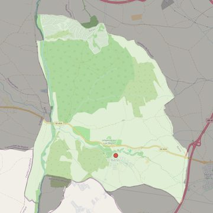

Nuestra Señora de la Asunción
- Arciprestazgo
- Griñón
- Población
- Batres
- Dirección postal
- c/ Serranillos, 5
- Código postal
- 28979
- Extensión
- 21,38 km² (2.138 ha)
- Teléfono
- 911 824 092
- Correo electrónico
- nsasuncion-batres@diocesisgetafe.es
- Información demográfica
- De la parroquia · De la población (Batres) · Del arciprestazgo (Griñón)


Descargar mapaLímites según decreto
Los del término municipal